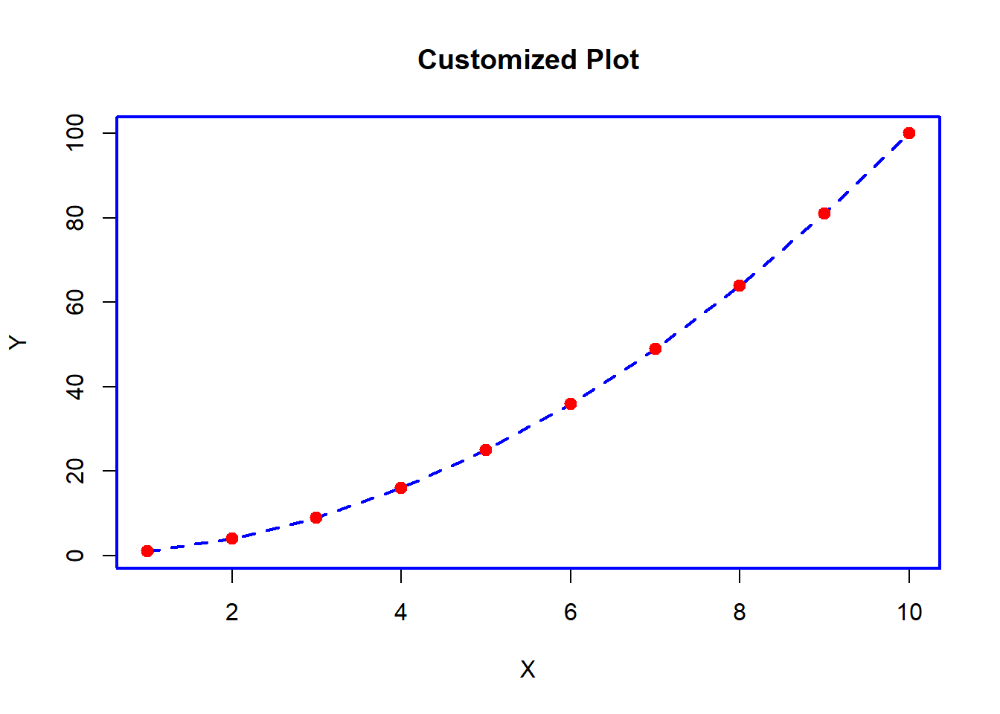

Chapter 4 CUSTOMIZING GRAPHS IN BASE R
4.1 Introduction
The main objectives of this chapter are:
- Learn to customize and enhance graphs using R’s base graphic parameters.
- Understand how to apply visual enhancements to convey information more effectively.
4.2 Graph Customization Basics
Customizing plots in R allows you to enhance the appearance and readability of the visualizations. The par() function in R is used to set or query graphical parameters.
i). Graphical Parameters (par())
- pch: Sets the plotting symbol (or point character) used in plotting functions like plot().
- lty: Sets the line type.
- lwd: Sets the line width.
- col: Sets the color of lines and points.
- bg: Sets the background color.
- cex: Sets the character size.
- mar: Sets the margins of the plot.
ii). Adding Custom Colors, Line Types, Point Shapes, and Plot Characters
- Custom Colors: You can specify custom colors using color names, hexadecimal codes, or color numbers.
- Line Types: Different line types are available, such as solid, dashed, dotted, etc.
- Point Shapes: Various point shapes are available, including circles, squares, triangles, etc.
- Plot Characters: Different plot characters, such as dots, crosses, stars, etc., can be used.
Example:
# Sample data
x <- 1:10
y <- x^2
# Plot with customized graphical parameters
par(
pch = 19, # Use solid circles for points
lty = 2, # Use dashed line
lwd = 2, # Set line width to 2
col = "blue" # Set line and point color to blue
)
plot(x, y, type = "l", main = "Customized Plot", xlab = "X", ylab = "Y")
points(x, y, col = "red") # Add points with red color
4.3 Enhancing Plot Aesthetics
Improving the aesthetics of plots is essential for effectively communicating your data. The following are some techniques for enhancing plot aesthetics in R:
- Setting Axis Options:
Axis Labels: Use xlab and ylab parameters to set labels for x and y axes, respectively. Tick Marks: Use axes = FALSE to remove axis tick marks and add them back using axis() function. Axis Limits: Use xlim and ylim parameters to set limits for the x and y axes, respectively. Example: